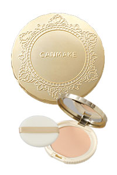
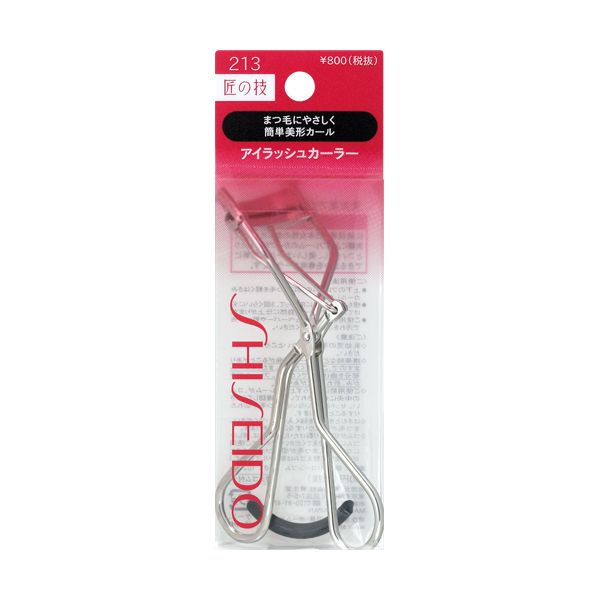
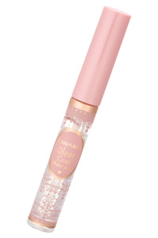
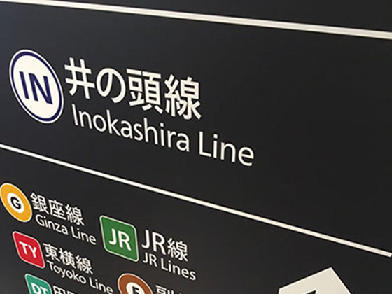

ここでは化粧に不慣れな高校生が親にバレずに化粧を楽しむにはどうすれば良いのかを考察している。
最初に前提条件をはっきり言語化し、その後問題点を洗い出す。そしてここでは最後にその問題点からの解決策を提案していくことにする。
以上の解決策から具体的に対して詳しくない筆者の独断と偏見に基づきいくつか化粧品を紹介してみる。
なお、入手方法についてはコンビニで通販の商品を受け取るところまで可能とのことで考慮しなかった。
個人的にはベースメイクについては本来の意味合いを考えるとよほど顔色が悪いのを誤魔化す（筆者はやっていた）のでもない限り必要ない、肌荒れしている場合は余計にやらない方がいいのではないかと考えるが、ベースメイクにより気分をあげる等メンタルの面での効果が期待できるため一応上げておくことにする。
紫外線防止という意味で日焼け止めは推奨されるので、カラーコントロール機能を持った下地はいいかもしれない。（しかしオルビスしか知らない）
| キャンメイク マシュマロフィニッシュパウダー |
 |
出典：公式サイト |
念押しするとやらない方がいい。ほぼ間違いなくバレる。
なのになぜこれを勧めるのかというと、もっとも安価に化粧をしている気分になれる道具だからである。
問題点としては、案外はっきり粉が至近距離で確認できる、学校終わりには流石に崩れるのでより目立つ等が上げられる。
よってどうしても使うのであれば、一度取った粉のみで、二度三度パフに粉を取らず薄く使用する。
一応洗顔料のみで落ちることになっているがあまりマイルドなものだと落ちないだろう。
こちらは単純明快に色付きリップを使用する。
理由としては外見で化粧品と判断されにくい、家で食器を使っていてそんなにはっきり移らない、万が一バレてもとりあえず誤魔化せる可能性が高い等が上げられる。
メンソレータム、ニベア等が推奨。理由は明快でメーカー名からして咎められても言い訳しやすいからである。
| 資生堂 アイラッシュカーラー213 |
 |
出典：公式サイト |
まつ毛は上げるだけで目の反射する光の量が増え、キラキラして見えるため高い効果が期待できかつ化粧であると指摘しにくい。欠点としてはビューラーを隠蔽するのが難しいかもしれない。あまり衝撃、圧力を加えると変形するので十分に注意されたし。
| キャンメイク クリアコートマスカラ |
 |
出典：公式サイト |
色がないので見てわかりにくいところがおすすめ、メイクした気分も味わえてお湯で落ちるというところも大事なポイント。言い訳のことを考えるのであればDHCのまつ毛美容液の方がいいかもしれない。
立て続けに目の周りに使うものを紹介したが、くれぐれも粘膜に触れてしまわないよう最新の注意を払うべし。
初期投資としてはこのくらいに絞っても良いと思う。化粧というのはなんだかんだ継続しようと思うと時間もないし、面倒にもなるものなので、あまりフルセットで揃えるべきではない。クレンジングのことも考えると洗顔料やお湯のみで落ちるものを探すことが望ましいと推定されるのでその点も留意したい。
中身のない長文にお付き合いいただいたお礼に可愛い「の」が使われている写真（斜めですが）をはっ付けておくのでご鑑賞くださった後にお帰りください。
こてんとお首を傾げてるみたいで可愛いでしょう？